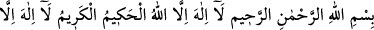

sûresi 35. âyet “
”den, itibaren sonuna kadar, Nâziât sûresi 46. altıncı
âyet “
” sonuna kadar, bir de Yûsuf sûresi 111. âyet sonuna kadar
yazılır. Bu yazı suda bozulur. Doğum yapacak olan kadına içirilir. Kadının karnı ve
rahmine serpilir. Bahru’l- ulûm’da böyledir.
Aynü’l- meânî’de der ki: İbn Abbâs şöyle demektedir: Kadına doğum zor ve zahmetli
olursa şu iki âyet bir sahifeye yazılır. Bu yazı suda eritilip kadına içirilir. Yazılacak duâ
tam olarak şudur:
“Rahmân ve rahîm olan Allah’ın adıyla Hakîm ve Kerîm olan Allah’tan başka ilâh
yoktur. Yüce ve azîm olan Allah’tan başka ilâh yoktur. Yedi kat göklerin rabbi ve yüce
arşın Rabbi olan Allah’ı noksan sıfatlardan tenzih ederiz. Onlar, tehdîd edildikleri
azâbı gördükleri gün, sanki gündüzün sadece bir sâati kadar yaşamış gibi olurlar. Bu
bir tebliğdir. Yoldan çıkmış topluluktan başkası mı helâk edilecektir?”
Şir’atü’l- İslâm’da şöyle denilmektedir: Doğumda zorlanan kadının kolay doğum
yapması için bir cam tabağa yahut bir gümüş kaba aynı duâ yazılır. Sonra yazı yıkanıp
suyu kadına içirilir.[48]
Meryem oğlu İsâ doğumda zorlanan hamile bir ineğin yanına uğradı. İnek, Îsâ (a.s.)’a:
“Ey Allah’ın kelimesi beni kurtarması için Allah duâ et” dedi. İsâ (a.s.) da: “Ey nefsten
nefs; yâni candan can yaratan Allah’ım, bu ineği kurtar” diye duâ etti. İnek hemen
karnındaki yavruyu doğurup kurtuldu. İşte bir kadına doğum zor olursa bu kelime
yazılmalıdır.
At, sığır ve diğer doğumlarda da bu uygulanır.
Âkâmu’l- mercan’da şöyle denilmiştir: Cin, sihir ve nazar gibi kendisine bir şey
isabet almış olan yahut diğer hastalar için de Allah’ın kitabından ve Allah’ın zikrinden
bir şeyler mübah mürekkeple yazılır. Bu yazı yıkanıp su hastaya içirilir. İmâm Ahmed b.
Hanbel ve diğerleri bunu açıkça beyân etmiştir.
“Allah’ın zikri” ifâdesiyle muhtelif milletlerin lügatlerinden mânâsı bilinmeyen
şeylerin yazılmasından kaçınılmıştır. Zira bu ifâdelerde küfür olabilir. Yine “mübah
mürekkep” sözüyle kan vb. pis şeylerden kaçınılmıştır. Zira böyle bir şey haram, hatta
küfürdür. Yine Kur’ân harflerini ters ve aksine yazmak haramdır. Sonra bu sûre-i
şerifenin kâfirlerin kökünü kesen bir ifâdeyle bitirilmesi yüce Kurân’ın letâifindendir.
Kıyâmete kadar ve sonsuza dek bütün hamdler Allah’a mahsustur. [49]